Mais autoconfiança
Um sorriso saudável também serve para desenvolver sua autoconfiança e, consequentemente, sua vida pessoal e profissional.
Aqui você encontrará materiais, técnicas e equipamentos odontológicos diferenciados e de excelente qualidade, trazidos diretamente dos Estados Unidos. Tudo isso aliado à expertise e experiência do Dr. Arya, garante o sucesso do tratamento a longo prazo.
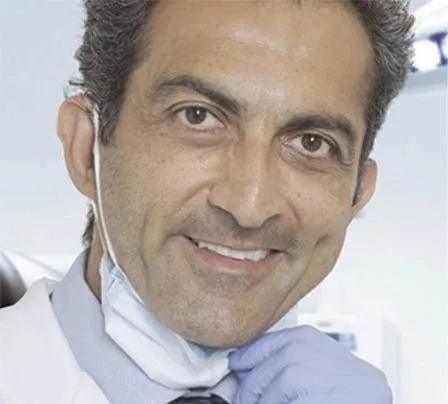
De Nova York a Santos
Dr. Arya Edalat
Na Baixada Santista
Clínica em Santos desde 2010
Alguns dos tratamentos realizados na clínica do Dr. Arya. Arraste para o lado ou use as setas para ver mais.
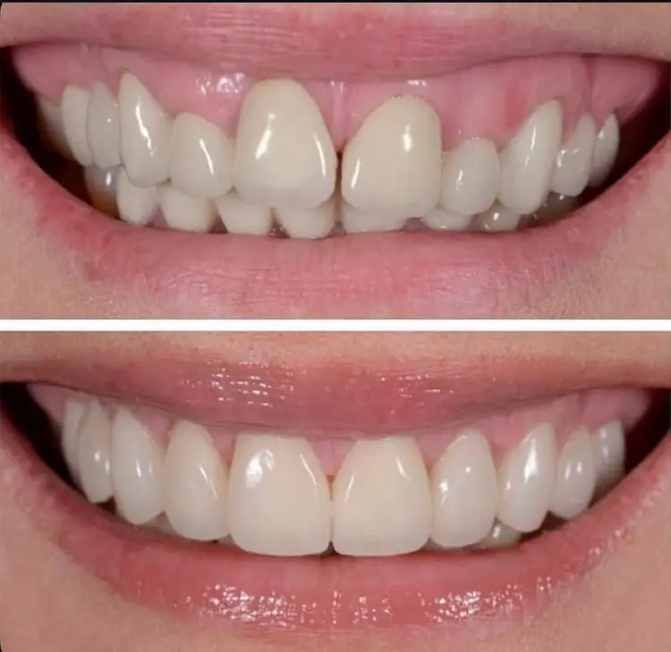
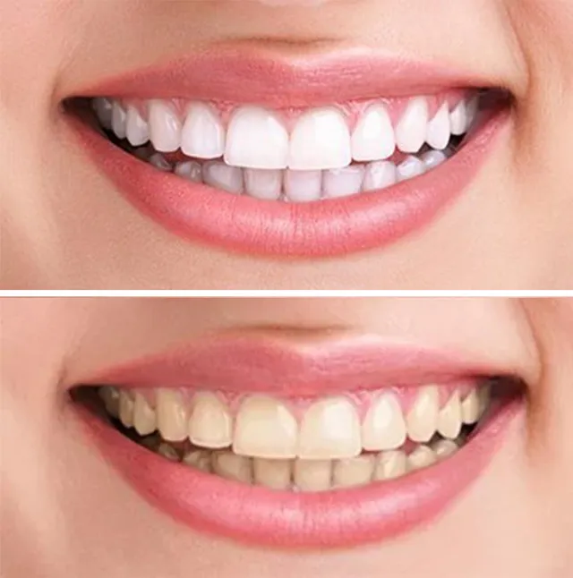
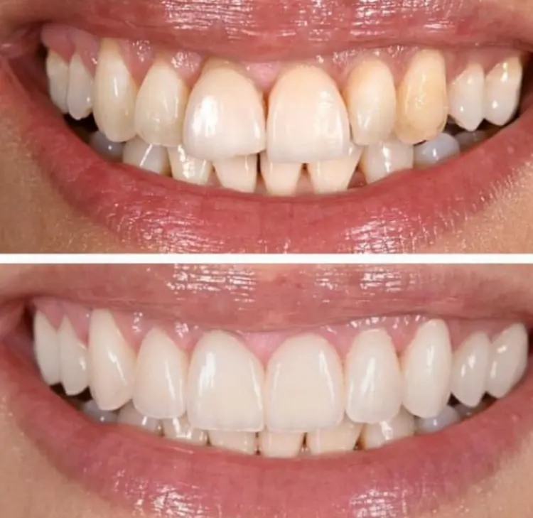
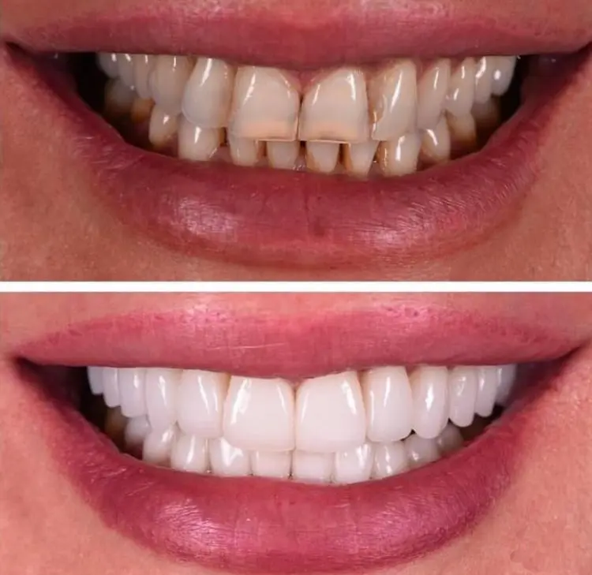
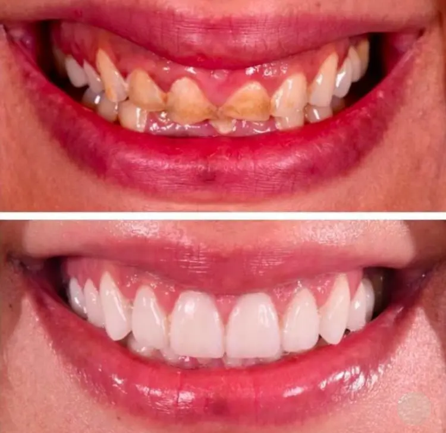
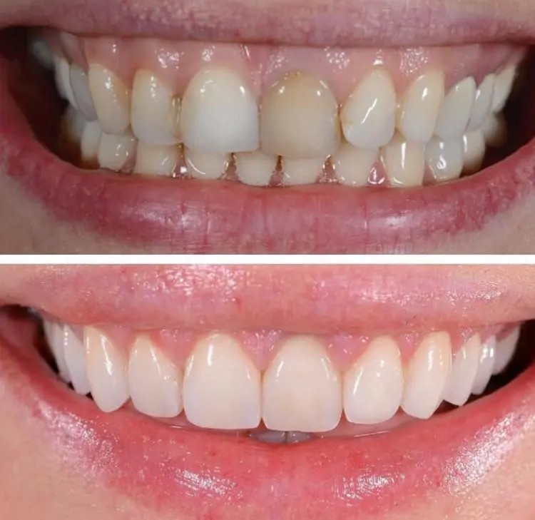
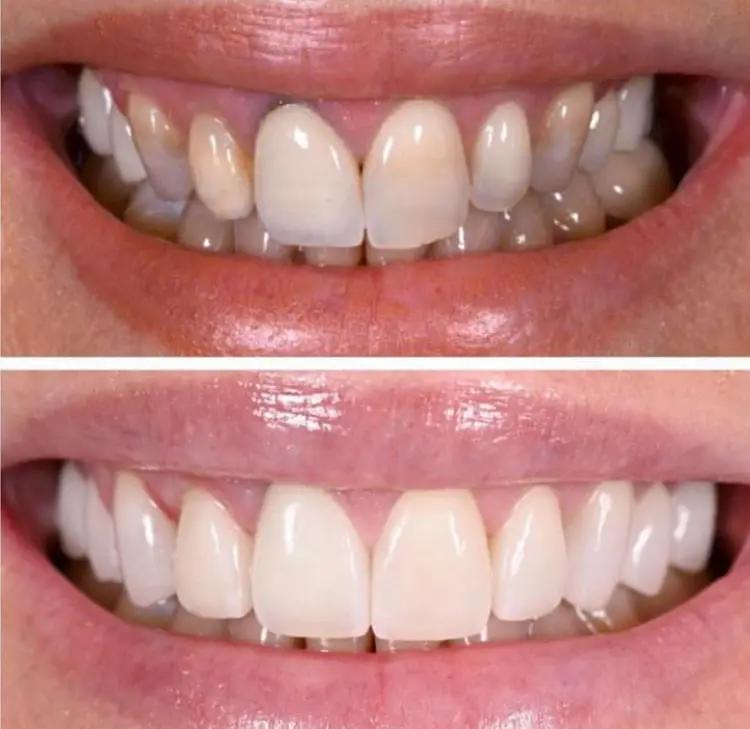
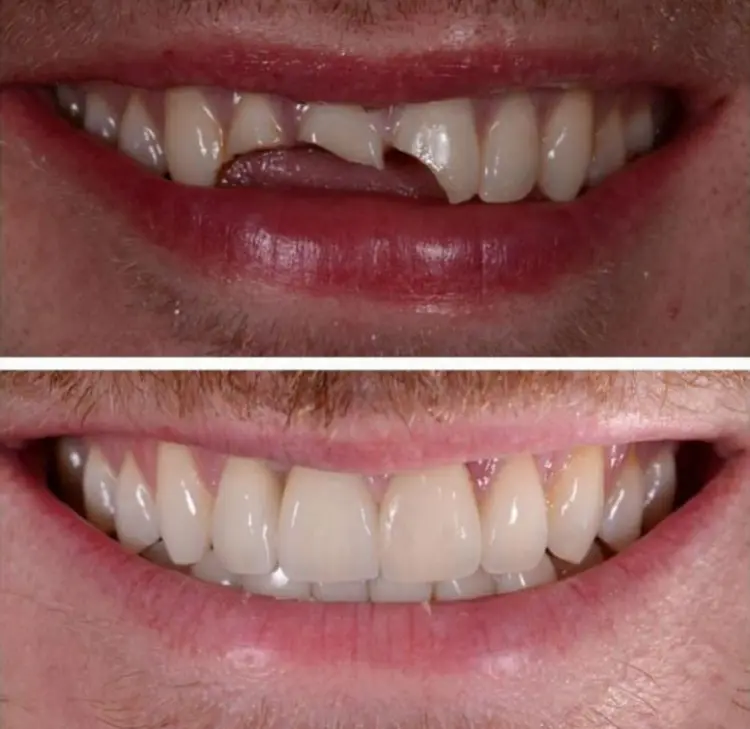
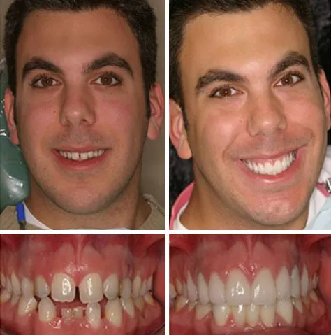
Sorriso transformado
De Nova York a Santos, o dentista profissional Dr. Arya se destaca pelos tratamentos conservadores e técnicas otimizadas, melhorando a qualidade da odontologia na Baixada Santista. Ao mesmo tempo, torna este alto nível de odontologia acessível à população em geral.
Especializada em lentes de contato dental, implantes, facetas e reabilitação oral completa, a clínica também oferece tratamentos seguros e acessíveis para:
A meta do Dr. Arya é o acesso de mais pessoas a tratamentos odontológicos seguros e de alta qualidade.
Materiais
Trazidos dos Estados Unidos
Um sorriso saudável também serve para desenvolver sua autoconfiança e, consequentemente, sua vida pessoal e profissional.
Você também encontrará um atendimento completo para restaurar sua saúde bucal nas mãos de um dentista em Santos com diversos diferenciais.
O objetivo da Clínica Dr. Arya é proporcionar a mais pessoas o acesso a serviços odontológicos de qualidade, independentemente do orçamento.
Avaliações de pacientes no Google
“Depois de passar por vários dentistas em Santos, que me deixavam a cada dia mais insatisfeita e sem vontade de sorrir, foi uma grande alegria encontrar na cidade um profissional como o Dr. Arya, que me devolveu o prazer de sorrir! Ele é perfeccionista e exigente, parece realmente buscar o melhor para seus pacientes. Seu profissionalismo e capacitação são impressionantes e transmitem muita segurança. O protético que trabalha também é excelente! Recomendo o Dr. Arya para todos aqueles que, assim como eu, buscam um profissional sério, dedicado, competente e, além de tudo, humano! Parabéns e obrigada, Dr. Arya!”
“Dr. Arya sabe MUITO sobre odontologia! Tratei minha boca toda com ele, de implantes, coroas, facetas e lente de contato. Ele fez as cirurgias de enxerto ósseo, canal, até minha limpeza dental. Ele é honesto, simpático e humilde! Recomendo para todos.”
“Dentista TOP! Melhor custo-benefício em Santos.”
“Dr. Arya realmente está interessado em ajudar os pacientes dele da melhor maneira possível. Ele não se importa em descontar ou financiar em várias vezes os serviços dele para ajudar o paciente a realizar o tratamento necessário. Isso é incrível de achar hoje em dia! O conhecimento e a experiência dele como um dentista formado nos EUA me deram toda a confiança de realizar todos os meus tratamentos gerais com ele.”
“Vi o site dele e fiquei tão impressionada com o trabalho dele, as fotos de antes e depois dos pacientes! Mestre em implantes e próteses, e me trata como família! Dr. Arya Edalat MUDOU minha vida transformando meu sorriso! Estou sorrindo à vontade e sou mais social.”
Oferecemos diversos tratamentos que se encaixam nas suas necessidades mais íntimas. Tudo é feito sob medida para que você tenha o melhor serviço odontológico.
Aqui você poderá resolver a maioria das suas preocupações, seja uma transformação do sorriso, reabilitação oral, rejuvenescimento do sorriso com facetas dentárias, cirurgia plástica de gengiva, implantes dentários, emergências odontológicas ou tratamentos mais comuns, como restaurações, limpezas e muito mais. Veja os serviços mais procurados:
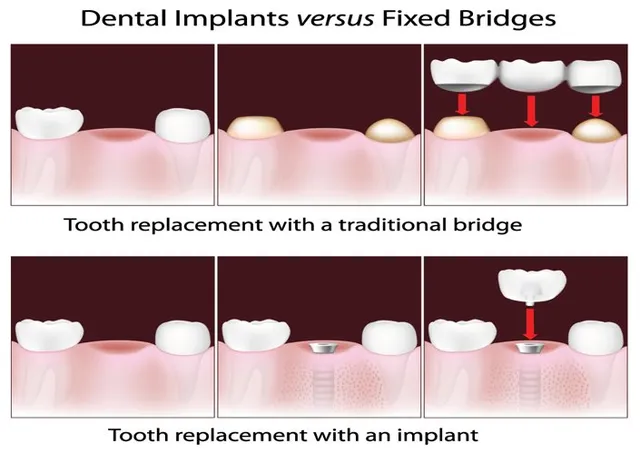
Os implantes dentários fazem parte da área de implantodontia, um ramo da odontologia que tem como foco a reabilitação do sorriso e da saúde bucal como um todo. Isso é realizado através das próteses, que podem ser totais ou parciais, fixas ou removíveis.
Esses implantes são integrados aos ossos da mandíbula ou maxilar utilizando pinos de metal, normalmente feitos de titânio, com a finalidade de oferecer um suporte similar ao da raiz do dente.
Uma das vantagens dessa abordagem é que não é necessário realizar o desgaste dos dentes naturais para a sua colocação. Contudo, nem sempre é possível, pois requer gengivas saudáveis e o suporte ósseo adequado para sustentar o pino metálico.
É comum precisar de tratamentos como enxertia óssea ou enxerto gengival para melhorar a fundação dos implantes, minimizando os riscos e complicações de fracasso e também criando uma estética harmoniosa entre dente e gengiva.
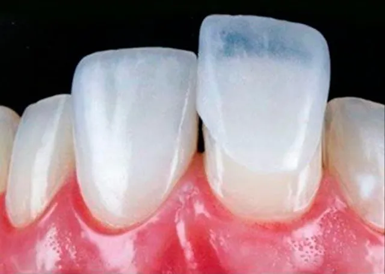
As lentes de contato dental são um laminado mais fino do que as facetas, chegando a ter uma espessura mínima de 0,2 mm. Esse tratamento é indicado quando os dentes precisam de menos desgaste do que nos casos das facetas. Embora no marketing desse tratamento seja comum dizer que os dentes não precisam de nenhum desgaste, pode ser necessário desgastá-los minimamente, mas sem enfraquecê-los, como muitos acreditam.
As pesquisas mostram que os dentes ficam tão fortes ou mais fortes após a colocação de facetas e lentes, porque essas restaurações agem como uma armadura uma vez cimentadas. Isso acontece pois os dentes se desgastam ao longo dos anos, a camada de esmalte fica mais fina e, assim, os dentes ficam mais flexíveis e suscetíveis a fraturas e trincas.
Um dos objetivos dessas restaurações é repor o volume ideal dos dentes, deixando-os mais rígidos e duros. Outra vantagem é que as áreas dos dentes cobertas pelas restaurações ficam protegidas contra cáries e manchas. Então, um tratamento de rejuvenescimento do sorriso tem vantagens funcionais além das estéticas.
A finalidade desse tratamento é a mesma do tratamento com facetas: as peças são cimentadas sobre os dentes com o objetivo de melhorar a forma e a cor deles. Por ser extremamente fina, é praticamente imperceptível e se assemelha muito à lente de contato ocular, daí vem o seu nome.
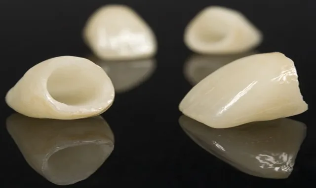
As coroas e pontes são próteses feitas para restaurar dentes desgastados. Quando um dente perde mais de 50% da estrutura dentária devido a cáries ou trauma, em regra é necessário protegê-lo com uma coroa total, a fim de evitar fraturas, trincas, cáries e outros problemas subsequentes que poderiam levar à perda dentária. Isso seria mais complexo, traumático e custoso de tratar, portanto é melhor prevenir do que tratar. Além disso, essas próteses também são importantes para proteger dentes enfraquecidos ou fraturados, com trincas e infiltrações, e até cobrir dentes descoloridos ou deformados para obter uma estética satisfatória.
As coroas de cerâmica, como as de zircônia ou Emax, servem para melhorar a aparência ou mesmo o formato e o alinhamento dos dentes na arcada dentária.
Muitos pacientes precisam fazer isso para conquistar o sorriso que desejam ou corrigir sua mordida a fim de poder mastigar de maneira adequada, evitando inclusive problemas digestivos que poderiam afetar a saúde do corpo. Lembre-se de que a boca é a porta para o seu corpo. Uma boca saudável é necessária para um corpo saudável.
As próteses dentárias fixas cimentadas, conhecidas como pontes, são recomendadas para pessoas que perderam algum dente e têm espaços vazios que podem resultar na movimentação dos dentes adjacentes ou antagonistas na arcada dentária. Também são indicadas para casos em que não é possível o implante dentário, ou em que o paciente não quer passar por uma cirurgia de implantes ou enxerto ósseo, ou deseja um tratamento mais rápido e mais econômico do que os implantes dentários.
As facetas de cerâmica são um dos métodos mais conservadores e rápidos para conquistar um sorriso harmonioso e têm se popularizado cada vez mais. Esses tratamentos, junto com as lentes de contato dental, seguem os princípios da biomimética, que constituem os tratamentos mais conservadores, com materiais dentários mais semelhantes à estrutura dentária natural.
Muitos modelos, atores e celebridades realizam esse tratamento para conseguir um sorriso belíssimo ou para rejuvenescer o sorriso. A faceta é uma peça fina de cerâmica feita sob medida por um protético em um laboratório.
É importante que o dentista, o paciente e o protético se comuniquem sobre a estética desejada pelo paciente para atingir o resultado esperado. É essencial trabalhar com um dentista e um protético especializados nesse campo para evitar possíveis complicações e falhas estéticas. Todos têm um papel importante na confecção dessas peças.
As facetas são cimentadas definitivamente na boca somente após testadas e aprovadas pelo paciente e pelo dentista. Os procedimentos de cimentação são bem delicados e precisos. Para que as peças sejam definitivamente fixadas, um adesivo de boa qualidade é aplicado no dente e na faceta de cerâmica; em seguida, a peça é fixada permanentemente com uma luz especial que endurece o cimento resinoso.
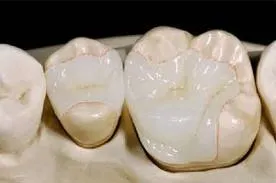
A prótese dentária (ou prótese dental) é a arte dental, ciência que lida com a reposição de tecidos bucais e dentes perdidos, visando restaurar e manter a forma, a função, a aparência e a saúde bucal. Aplicados à odontologia, são utilizados indistintamente os termos prostodontia e prótese dentária. O termo “prótese dentária” também é utilizado para se referir ao artefato que se propõe a substituir a função original dos dentes perdidos ou ausentes.
O seu principal objetivo é a reabilitação bucal em todas as suas funções: estética, fonética e mastigação. Repõe ou restaura de forma indireta (por meio laboratorial) os dentes, por meio da confecção de próteses fixas (coroas em metal, porcelana e materiais poliméricos, e pontes) ou de próteses removíveis, como a prótese total (a popular dentadura) ou a prótese parcial removível (ponte móvel). Recentemente encontramos próteses modernas produzidas sobre implantes, como overdentures, próteses fixas livres de metal (metal free) e próteses protocolo.
Não se deve confundir o protesista (cirurgião-dentista especialista em prótese dentária) com o protético (técnico em prótese dentária), que presta serviço para o cirurgião-dentista e não deve atender diretamente o paciente.
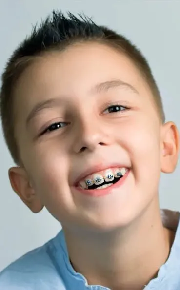
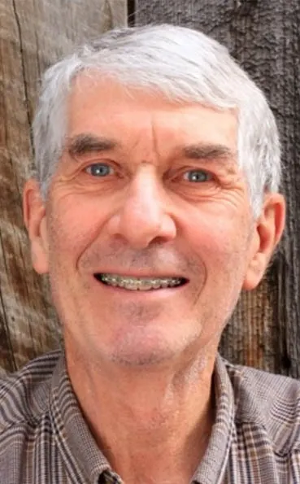
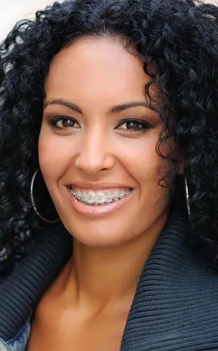
O ortodontista é o dentista responsável por cuidar do posicionamento dos dentes, e isso vai muito além de uma questão estética. Dentes imperfeitos podem ocasionar dor de cabeça, de ouvido, gengivite, doenças gengivais acompanhadas de perda óssea, cáries, apneia e até mesmo dor irradiada para as costas por conta do desalinhamento da articulação temporomandibular.
Os aparelhos ortodônticos realizam o alinhamento da dentição e a movimentam até chegar à posição correta. Para isso, é necessário um amplo estudo da arcada dentária do indivíduo, sendo preciso criar moldes e uma estratégia para o posicionamento dos dentes.
Cada caso terá uma abordagem única, e é necessária a avaliação de um profissional especializado para decidir qual o melhor tratamento, já que nem sempre ele é realizado com o famoso aparelho fixo.
Os tratamentos mais recentes, como o Invisalign, por serem um sistema removível, facilitam bastante a limpeza diária dos dentes. Para quem não gosta de aparelhos fixos, esta é uma excelente opção, porque o sistema é invisível: o paciente usa alinhadores transparentes removíveis, que são responsáveis pela movimentação dos dentes. Outra grande vantagem desse sistema é que não é preciso extrair dentes saudáveis para criar espaços a fim de alinhar os dentes, como costuma ser feito com os aparelhos convencionais.
A halitose é um problema que afeta uma boa parcela da população e, em grande parte dos casos, o problema está na cavidade bucal, embora também possa ser um sintoma de problemas sistêmicos. A principal causa da halitose é a higiene bucal inadequada e suas consequências: o acúmulo de placa bacteriana e de tártaro. Os restos de alimentos servem de alimento para as bactérias que vivem naturalmente na boca, que liberam substâncias com forte odor.
Por isso, é muito importante saber escovar os dentes e passar o fio dental de maneira correta. Também é essencial realizar uma limpeza dentária profissional, conhecida como raspagem subgengival, a fim de remover todo o tártaro acumulado nos dentes e nas raízes, por baixo da gengiva. Esse tártaro é a maior razão de perda dos dentes no mundo e pode ser responsável por várias doenças sistêmicas, como doenças do coração, infarto cerebral, diabetes e bacteremia (uma infecção generalizada que pode até ser fatal), entre outras.
Outro fator é a saburra lingual, uma camada amarelada de restos de comida e células mortas que se deposita no fundo da língua e que também serve de alimento para as bactérias que causam a halitose.
Ao identificar esse sinal, é importante consultar um médico ou dentista a fim de encontrar a fonte do problema, que pode estar relacionado a questões mais graves.
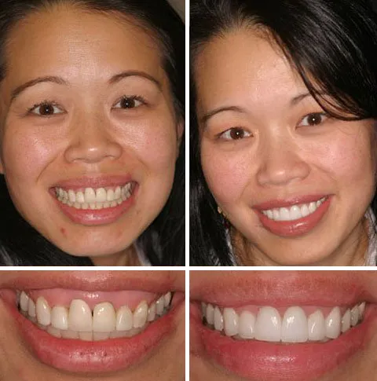
Esse é o nome dado às cirurgias gengivais reconstrutoras, que são necessárias quando existe exposição da raiz de um dente devido à retração gengival, causando sensibilidade dental e comprometimento estético. Isso pode acontecer por diversos motivos, inclusive por técnicas inadequadas de escovação.
Nos casos que precisam de enxerto gengival, o Dr. Arya irá analisar situações como retrações de gengiva expondo a raiz dos dentes, recobrimentos gengivais, um sorriso que mostra muita gengiva ou dentes muito pequenos, espessura fina demais da gengiva ou mesmo contornos que não sejam esteticamente satisfatórios para o indivíduo.

O clareamento dental é um dos principais motivos pelos quais uma pessoa procura o dentista. Além de proporcionar um sorriso bonito, também serve como uma avaliação clínica da saúde bucal do paciente.
A dentição humana fica amarelada naturalmente com o passar do tempo, e fatores como a alimentação influenciam diretamente nesse processo de manchas e amarelamento. Isso incomoda muitas pessoas, especialmente aquelas que realmente se importam com a estética do seu sorriso.
O clareamento dental também é indicado, muitas vezes, antes de tratamentos com lentes de contato dental ou facetas de cerâmica, para que essas peças possam ser confeccionadas mais translúcidas.
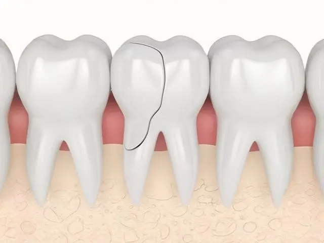
A prevenção é a única forma de manter a saúde bucal a longo prazo, evitando cáries, placa bacteriana, tártaro, doenças gengivais, perda óssea e outros problemas mais sérios que podem se desenvolver em qualquer idade, como câncer bucal, doenças sistêmicas e perda dos dentes, entre outros.
Contar com o auxílio de um dentista de 6 em 6 meses também ajuda a prolongar o sucesso dos tratamentos já realizados.
As medidas preventivas vão além das tradicionais, como limpeza dentária e aplicação de flúor. Também é indicada a realização de uma série complementar de raios X, a fim de ir além do que os olhos são capazes de enxergar, isto é, embaixo da gengiva, no osso e nas cáries entre os dentes, e assim apurar se há perda óssea ou tumores no osso, entre outros problemas.
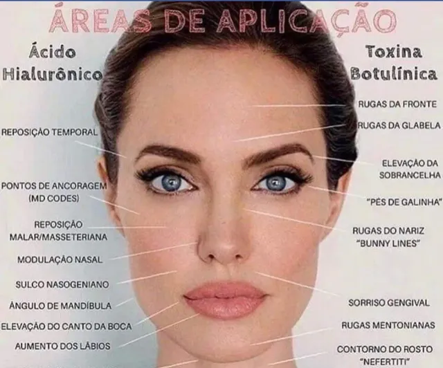
A harmonização facial está entre as técnicas estéticas mais procuradas hoje, e um dos principais motivos é que ela não envolve cortes. É possível ter lábios mais volumosos com o preenchimento labial, suavizar rugas com tratamentos antirrugas, aumentar o queixo e até levantar o nariz sem precisar passar por uma cirurgia.
Esse processo envolve diversos procedimentos, entre eles os famosos tratamentos antirrugas, ácido hialurônico, lasers, radiofrequência e estímulo da produção de colágeno, entre outros.
O tratamento é indicado para quem deseja reduzir os sinais da idade ou deixar o rosto mais proporcional. O objetivo da harmonização facial não é fazer mudanças drásticas no rosto, mas realçar a beleza natural de cada pessoa.
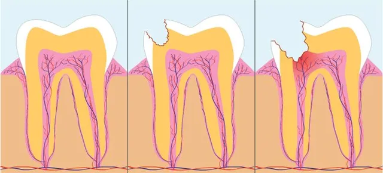
O tratamento de canal (endodontia) é indicado quando a polpa do dente, o tecido interno com nervos e vasos sanguíneos, fica inflamada ou infectada por uma cárie profunda, trincas ou traumas.
No procedimento, a polpa comprometida é removida, os canais da raiz são limpos, desinfetados e preenchidos com um material próprio, e o dente é selado. Assim é possível eliminar a dor e a infecção e manter o dente natural na boca.
Depois do canal, o dente costuma precisar de uma restauração ou de uma coroa para recuperar a resistência e evitar fraturas.
Saber escovar os dentes e passar o fio dental do jeito certo é o primeiro passo para manter a saúde bucal.
Um dentista bem formado, com uma clínica odontológica moderna, tabela de preços acessíveis e pagamentos facilitados, especializado em prótese estética e implantes dentários nos EUA, praticando no coração do Gonzaga, no Edifício Pátio Iporanga, com estacionamento conveniente. Sejam bem-vindos.
Dr. Arya se formou em Odontologia, em 1994, pela renomada New York University. No mesmo ano, começou a atuar em sua clínica situada em Manhattan, Nova York, ao lado de seu pai e de sua irmã, ambos renomados dentistas especializados e professores do Centro de Odontologia da New York University.
Especialização em Implantodontia, Cirurgia e Prótese pela New York University.
Especialização em odontologia estética pela mesma faculdade. Em sua clínica de Nova York, Dr. Arya dedicou-se, sobretudo, à odontologia estética, realizando inúmeros casos estéticos e funcionais, como a reabilitação total da boca, recuperando a saúde bucal de seus pacientes e promovendo a transformação do sorriso deles.
Revalidou seu diploma norte-americano na Universidade de São Paulo (USP) em 2006 e concluiu seu curso de especialização em implantodontia (cirurgia e prótese) na USP em 2008.
Encantado com o Brasil e com a possibilidade de viabilizar o acesso dos brasileiros às mesmas técnicas odontológicas norte-americanas, o Dr. Arya abriu, em 2010, sua Clínica Beautiful Smile de Odontologia Estética em Santos, SP.
Diante de sua forma diferenciada de clinicar, o Dr. Arya ganhou, em 2015, o prêmio Top Doctors and Dentists of New York, sendo considerado um dos melhores dentistas de Nova York, assim como sua irmã, Dra. Maryam Edalat, e seu pai, Dr. Parviz Edalat, que também participam da clínica de Nova York.
Visando manter-se sempre atualizado com as novas técnicas norte-americanas, o Dr. Arya continua como professor adjunto na faculdade de odontologia da New York University e atende seus pacientes na clínica de Nova York três a quatro vezes por ano, de lá trazendo para a clínica de Santos as últimas novidades e tendências norte-americanas. Ele está muito satisfeito por poder proporcionar aos seus pacientes brasileiros as mesmas técnicas e os mesmos materiais dentários utilizados nas melhores clínicas dos Estados Unidos, com preços compatíveis com o mercado santista.
Um dos fatores essenciais do sucesso do Dr. Arya consiste na escolha criteriosa dos laboratórios de próteses com quem ele trabalha, de forma a viabilizar a utilização de materiais da melhor qualidade nas próteses, desenvolvidos por talentosos mestres ceramistas, e, assim, garantir a longevidade, a beleza e a naturalidade delas. Ele trabalha com laboratórios renomados em Santos, São Paulo e Nova York.
Ver a satisfação nos olhos e nos sorrisos de seus pacientes é a meta do Dr. Arya e o que lhe dá motivação e energia para enfrentar os desafios cotidianos.
Substituir um dente perdido é muito importante, mas quais são as principais opções? Este guia explica as principais formas de substituir um dente perdido.
Leia maisQuando se trata de restaurar dentes perdidos, os profissionais de odontologia devem recomendar duas soluções principais: pontes fixas e implantes dentários…
Leia maisO Invisalign e a terapia ortodôntica convencional são dois métodos populares para corrigir desalinhamentos dentários. O Invisalign oferece uma opção discreta e removível usando alinhadores…
Leia maisNos últimos cinco anos, as facetas de resina se tornaram cada vez mais populares entre o público em geral devido a postagens no Instagram…
Leia maisOs implantes dentários são uma solução amplamente utilizada para substituir dentes perdidos, oferecendo durabilidade, funcionalidade e estética. No entanto, como qualquer procedimento cirúrgico…
Leia maisVocê pode precisar da remoção dos dentes do siso se eles causarem dor, crescerem tortos ou resultarem em outros problemas de saúde bucal…
Leia maisAtendimento no coração do Gonzaga, em Santos, e em Nova York.